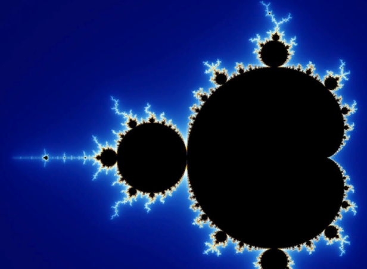
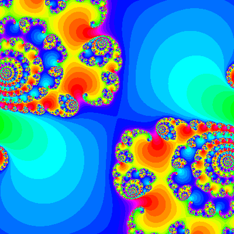

Алгебраические фракталы
Вторая большая группа фракталов - алгебраические. Свое название они получили за то, что их строят, на основе алгебраических формул иногда весьма простых. В результате математической обработки данной формулы на экран выводится точка определенного цвета. Результатом оказывается странная фигура, в которой прямые линии переходят в кривые, появляются эффекты самоподобия на различных масштабных уровнях. Практически каждая точка на экране компьютера как отдельный фрактал.Примеры алгебраических фракталов:
Множество Мандельброта
 Множества Мандельброта наиболее распространенный среди алгебраических фракталов. Его можно найти во многих научных журналах, обложках книг, открытках, и в компьютерных хранителях экрана. Этот фрактал, напоминающий чесальную машину с прикрепленными к ней пылающими древовидными и круглыми областямиМножество Жулиа
 Множество Жулиа было изобретено французским математиком Гастоном Жулиа. Не менее известный алгебраический фрактал.Хотя это нельзя увидеть на картинке, фрактал Мандельброта - это, на самом деле, множество фракталов Жулиа, соединенных вместе. Каждая точка (или координата) множества Мандельброта соответствует фракталу Жулиа.